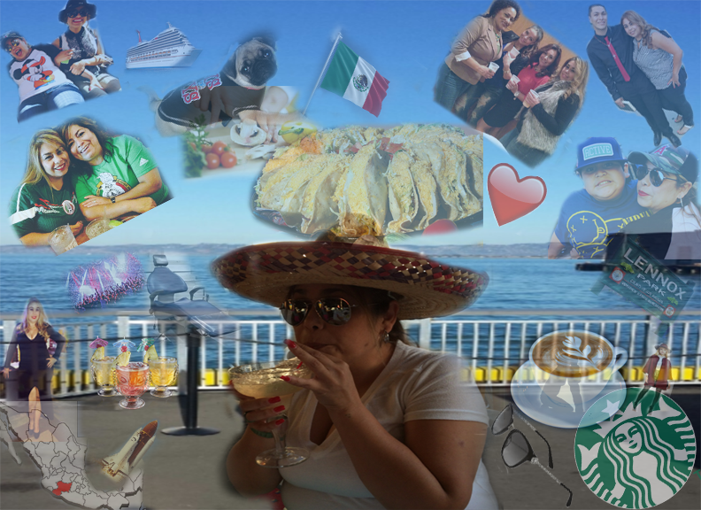

Noel's Page
Refelection
In Daramola's class I interview my mom for our coding the past project so because I chose my mom to interview then I also was supposed to make a layer self portrait for her similar to the one I made for myself. Every image I chose for my personal self portrait represent something for example I put different pictures of fruit on mine to represent how I want to eat healthier in 2018. Instead of choosing images to represent how I wanted to be for my moms self portrait I chose images to represent who my mom is and put pictures of the important people in her life and things she’s experienced like the space shuttle that she remembers exploding or the many cruises she’s been on. I connected my mom to the space shuttle she was around to hear about. She was in class one day and then they told her that the space shuttle had exploded. She had also mentioned that she grew up in the 90s and witnessed a lot of drive by shootings. When choosing were images went on the layered portrait for instance I had family pictures up towards the right and left corners on the picture. I also included family/homey things in the middle of those corners. I made the picture I was gonna use for my mom and made it the focal point in the bottom center of the picture. The remaining two corners I used to put things my mom does and things the describe my mom like having coffee and starbucks because my mom loves coffee.


This is the layered potrait I created of my self using photoshop clicking it will open the image

This is my essay on siblings Clicking this image will open the google doc to my essay

This is the subjet layered potrait that I created for my mom clicking it will open the image